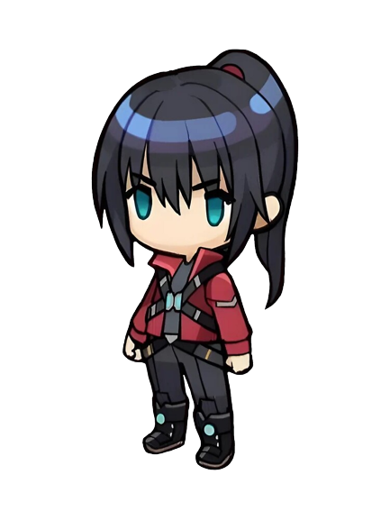
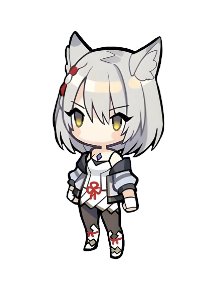
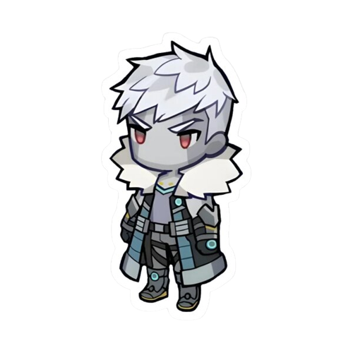
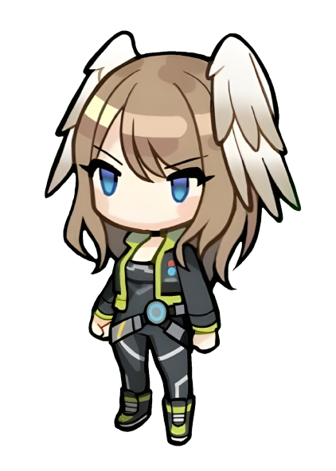
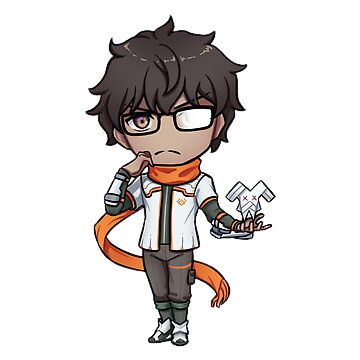

|
Sena (Japanese: セナ, Sena) is a playable character in Xenoblade Chronicles 3. |
Noah (Japanese: ノア, Noa) is a playable character and, along with Mio, a protagonist of Xenoblade Chronicles 3. |
 |
|  | Mio (Japanese: ミオ, Mio) is a playable character and, along with Noah, a protagonist of Xenoblade Chronicles 3. |
Lanz (Japanese: ランツ, Rantsu) is a playable character in Xenoblade Chronicles 3. |
 |
|
Sena (Japanese: セナ, Sena) is a playable character in Xenoblade Chronicles 3. |
Eunie (Japanese: ユーニ, Yūni) is a playable character in Xenoblade Chronicles 3. |
 |
|  | Taion (Japanese: タイオン, Taion) is a playable character in Xenoblade Chronicles 3. |